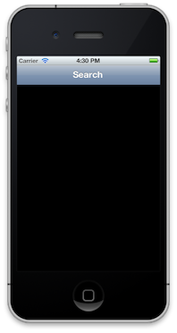
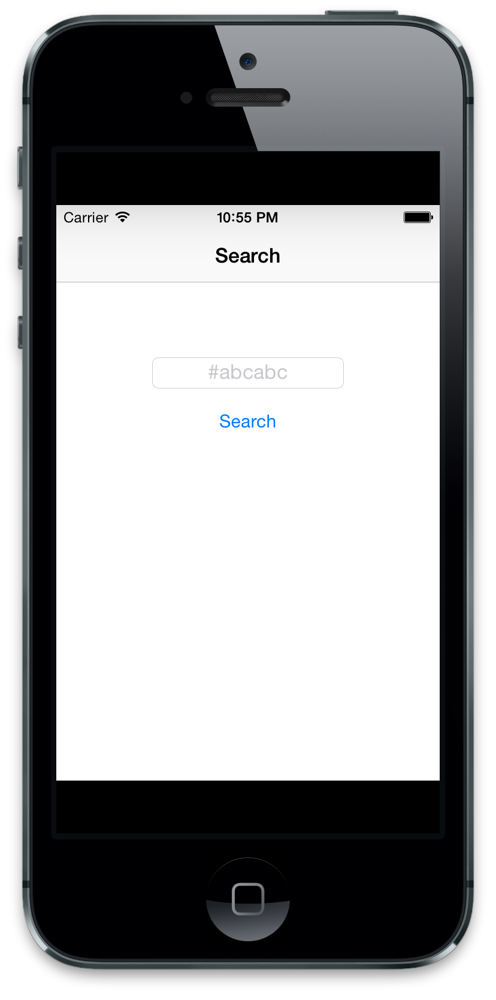
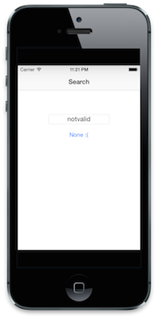
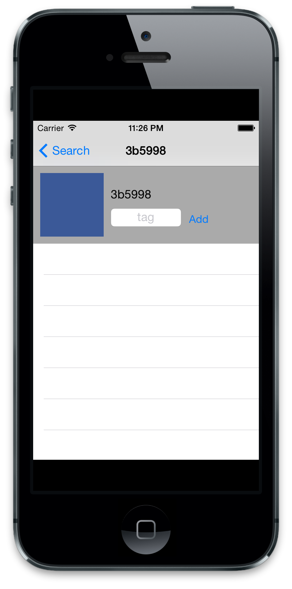
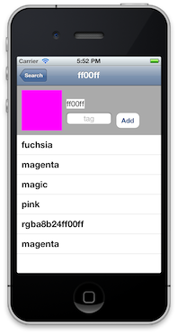
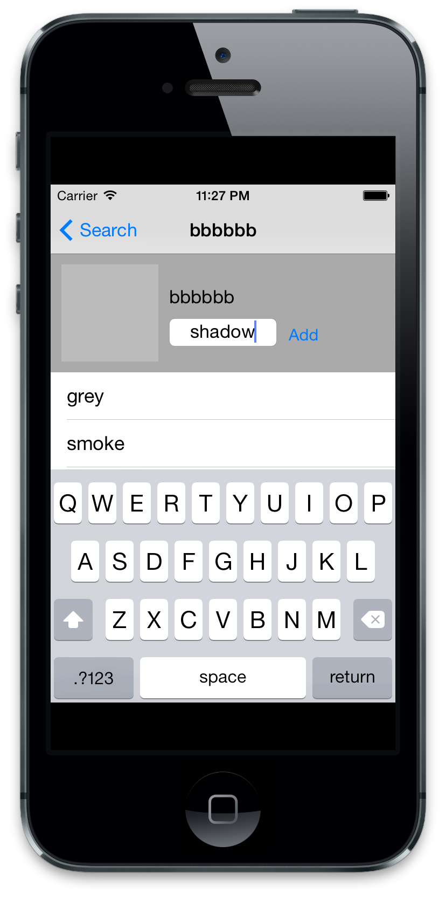

API Driven Example: Colr
We're going to build a front-end for the Colr JSON API. Our users can type in a color hex code (i.e. "#3B5998") and then see what tags Colr users have assigned to that color. If our user is feeling particularly adventurous, they can add a new tag!
Let's talk about high-level architecture. We need two controllers: one for search, and one for a color. These should be wrapped inside a UINavigationController, our top level controller. We're also going to need some models: Color and Tag. I'm going to be honest: our app won't be the next top post on Dribbble, but it will work.
Setup
motion create Colr to get our project set up, and add require 'bubble-wrap' to our Rakefile. We're going to do a proper setup and create some folders inside ./app: make ./app/models/ and ./app/controllers.
Models
First let's dig into our models. The Colr API returns its colors as JSON objects as the form:
{
"timestamp": 1285886579,
"hex": "ff00ff",
"id": 3976,
"tags": [{
"timestamp": 1108110851,
"id": 2583,
"name": "fuchsia"
}]
}
So our Colors will need timestamp, hex, id, and tags properties. In particular, tags will represent a has-many relationship with our Tag objects.
Make a ./app/models/color.rb and fill it in with our nice model template:
class Color
PROPERTIES = [:timestamp, :hex, :id, :tags]
PROPERTIES.each { |prop|
attr_accessor prop
}
def initialize(hash = {})
hash.each { |key, value|
if PROPERTIES.member? key.to_sym
self.send((key.to_s + "=").to_s, value)
end
}
end
...
Pretty easy to do with the PROPERTIES trick. But we need to give some special treatment to the tags attribute, which forces it to be always an array of Tag objects:
...
def tags
@tags ||= []
end
def tags=(tags)
if tags.first.is_a? Hash
tags = tags.collect { |tag| Tag.new(tag) }
end
tags.each { |tag|
if not tag.is_a? Tag
raise "Wrong class for attempted tag #{tag.inspect}"
end
}
@tags = tags
end
end
Our custom #tags getter guarantees that it will return an array if no value has been given. The #tags= setter ensures that every object in tags will be an actual Tag object. But wait...we haven't written the Tag class yet!
Create and open ./app/models/tag.rb. As you can see from the above example, the tags returned from the API are of the form:
{
"timestamp": 1108110851,
"id": 2583,
"name": "fuchsia"
}
So in our Tag class, let's create our nice API-friendly model. No special overrides for this one, it can work as-is:
class Tag
PROPERTIES = [:timestamp, :id, :name]
PROPERTIES.each { |prop|
attr_accessor prop
}
def initialize(hash = {})
hash.each { |key, value|
if PROPERTIES.member? key.to_sym
self.send((key.to_s + "=").to_s, value)
end
}
end
end
Controllers
Now that we have our models, time to start our controllers. Make ./app/controllers/search_controller.rb and ./app/controllers/color_controller.rb. We should give them a bare-bones implementation for now:
class SearchController < UIViewController
def viewDidLoad
super
self.title = "Search"
end
end
class ColorController < UIViewController
def viewDidLoad
super
self.title = "Color"
end
end
And in our AppDelegate, throw a UIWindow and UINavigationController on the screen:
class AppDelegate
def application(application, didFinishLaunchingWithOptions:launchOptions)
@window = UIWindow.alloc.initWithFrame(UIScreen.mainScreen.bounds)
@search_controller = SearchController.alloc.initWithNibName(nil, bundle:nil)
@navigation_controller = UINavigationController.alloc.initWithRootViewController(@search_controller)
@window.rootViewController = @navigation_controller
@window.makeKeyAndVisible
true
end
end
We've seen this stuff before, but maybe not all at once. rake and check out our spartan app:

Good start! Time to fill in our SearchController.
SearchController
We're going to add a new type of control we haven't used, UITextField, to retrieve the hex code from the user. When the user pushes a "Search" button, we'll run the appropriate API request and lock the UI until it finishes. If we found a result, we'll push a new ColorController; else, we'll show a sad alert. Sound gravy?
We can setup our views in SearchController using something like this:
def viewDidLoad
super
self.title = "Search"
self.view.backgroundColor = UIColor.whiteColor
@text_field = UITextField.alloc.initWithFrame [[0,0], [160, 26]]
@text_field.placeholder = "#abcabc"
@text_field.textAlignment = UITextAlignmentCenter
@text_field.autocapitalizationType = UITextAutocapitalizationTypeNone
@text_field.borderStyle = UITextBorderStyleRoundedRect
@text_field.center = CGPointMake(self.view.frame.size.width / 2, self.view.frame.size.height / 2 - 100)
self.view.addSubview @text_field
@search = UIButton.buttonWithType(UIButtonTypeRoundedRect)
@search.setTitle("Search", forState:UIControlStateNormal)
@search.setTitle("Loading", forState:UIControlStateDisabled)
@search.sizeToFit
@search.center = CGPointMake(self.view.frame.size.width / 2, @text_field.center.y + 40)
self.view.addSubview @search
end
A lot of the specific positioning (self.view.frame.size.height / 2 - 100) are based on my personal guess and check, there's no special magic going on (unfortunately). Some new bits are UIControlStateDisabled, which corresponds to what the button looks like if we do @search.enabled = false, and UITextBorderStyleRoundedRect, which is a nice-looking style of UITextFields.
rake now and get a feel for our interface:

Time to hook it up to some events. Remember when I said BubbleWrap comes with some nifty wrappers? Well, it has one to replace the clumsy addTarget:action:forControlEvents syntax we used earlier. Check out how idiomatic Ruby can make our code much cleaner:
def viewDidLoad
...
self.view.addSubview @search
@search.when(UIControlEventTouchUpInside) do
@search.enabled = false
@text_field.enabled = false
hex = @text_field.text
# chop off any leading #s
hex = hex[1..-1] if hex[0] == "#"
Color.find(hex) do |color|
@search.enabled = true
@text_field.enabled = true
end
end
end
The when function is available to every UIControl subclass (of which UIButton is one) and takes the usual bitmask of UIControlEvents as its arguments. While the request runs, we temporarily disable our UI elements.
But wait...what's that Color.find method? Well, it's a good idea to keep all of your URL requests inside of models instead of controllers. That way if we want to get a Color from the server somewhere else in the app then there's no code duplication. Who knows, maybe we'll need that too...foreshadowing
So in your Color class, add the find static method:
class Color
...
def self.find(hex, &block)
BW::HTTP.get("http://www.colr.org/json/color/#{hex}") do |response|
p response.body.to_str
# for now, pass nil.
block.call(nil)
end
end
end
Look bad? We use the basic HTTP.get to get some data from the server via the proper API URL. Note that we use the &block notation to make it plain that this function is intended to be used with a block. This block isn't explicitly passed as another argument, but rather is implicilty passed when we put a do/end after we call the method. The number and order of variables in .call(some, variables) corresponds to do |some, variables|.
Anyway, rake and give it a go with a color like "3B5998". You should see something like this output in the console:
(main)> "{\"colors\": [{\"timestamp\": 1285886579, \"hex\": \"ff00ff\", \"id\": 3976, \"tags\": [{\"timestamp\": 1108110851, \"id\": 2583, \"name\": \"fuchsia\"}, {\"timestamp\": 1108110864, \"id\": 3810, \"name\": \"magenta\"}, {\"timestamp\": 1108110870, \"id\": 4166, \"name\": \"magic\"}, {\"timestamp\": 1108110851, \"id\": 2626, \"name\": \"pink\"}, {\"timestamp\": 1240447803, \"id\": 24479, \"name\": \"rgba8b24ff00ff\"}, {\"timestamp\": 1108110864, \"id\": 3810, \"name\": \"magenta\"}]}], \"schemes\": [], \"schemes_history\": {}, \"success\": true, \"colors_history\": {\"ff00ff\": [{\"d_count\": 0, \"id\": \"4166\", \"a_count\": 1, \"name\": \"magic\"}, {\"d_count\": 0, \"id\": \"2626\", \"a_count\": 1, \"name\": \"pink\"}, {\"d_count\": 0, \"id\": \"24479\", \"a_count\": 1, \"name\": \"rgba8b24ff00ff\"}, {\"d_count\": 0, \"id\": \"3810\", \"a_count\": 1, \"name\": \"magenta\"}]}, \"messages\": [], \"new_color\": \"ff00ff\"}\n"
Hey...that looks an awful lot like JSON, doesn't it? (if you didn't notice the "/json/" in the URL). Wouldn't it be great if we could parse that into a normal Ruby hash?
BubbleWrap to the rescue again! Our nifty friend also has a BW::JSON.parse method which does exactly what it sounds like. Let's update Color.find to use it:
def self.find(hex, &block)
BW::HTTP.get("http://www.colr.org/json/color/#{hex}") do |response|
result_data = BW::JSON.parse(response.body.to_str)
color_data = result_data["colors"][0]
# Colr will return a color with id == -1 if no color was found
color = Color.new(color_data)
if color.id.to_i == -1
block.call(nil)
else
block.call(color)
end
end
end
And in our SearchController, our callback can adapt appropriately if we got an invalid color:
def viewDidLoad
...
Color.find(hex) do |color|
if color.nil?
@search.setTitle("None :(", forState: UIControlStateNormal)
else
@search.setTitle("Search", forState: UIControlStateNormal)
self.open_color(color)
end
@search.enabled = true
@text_field.enabled = true
end
end
end
def open_color(color)
p "Opening #{color}"
end
This seems pretty reasonable. We parse the JSON, check for the non-existent/-1 id, and alter the UI accordingly:

Great! Let's fix that open_color method to work. It should push a ColorController with the proper color, so we should probably fill in that implementation now.
def open_color(color)
self.navigationController.pushViewController(ColorController.alloc.initWithColor(color), animated:true)
end
ColorController
We're going to use a custom initializer for ColorController; these custom initializers should always call the designated initializer of their superclass first (in this case, initWithNibName:bundle:). The controller's view will have two parts: a UITableView to display the color's tags, and a section to display the color and add new tags. When we want to add a new tag, a POST request is sent and our data is refreshed accordingly.
That sounds like a lot, so let's take it one step at a time. First, our custom initializer:
class ColorController < UIViewController
attr_accessor :color
def initWithColor(color)
initWithNibName(nil, bundle:nil)
self.color = color
self
end
...
When overriding an iOS SDK initializer, you need to do two things: call the designated initializer and return self at the end. Beware: you can't use the usual Ruby initialize function!
Next, let's layout our interface:
def viewDidLoad
super
self.title = self.color.hex
# A light grey background to separate the Tag table from the Color info
@info_container = UIView.alloc.initWithFrame [[0, 0], [self.view.frame.size.width, 110]]
@info_container.backgroundColor = UIColor.lightGrayColor
self.view.addSubview @info_container
# A visual preview of the actual color
@color_view = UIView.alloc.initWithFrame [[10, 10], [90, 90]]
# String#to_color is another handy BubbbleWrap addition!
@color_view.backgroundColor = String.new(self.color.hex).to_color
self.view.addSubview @color_view
# Displays the hex code of our color
@color_label = UILabel.alloc.initWithFrame [[110, 30], [0, 0]]
@color_label.text = self.color.hex
@color_label.sizeToFit
self.view.addSubview @color_label
# Where we enter the new tag
@text_field = UITextField.alloc.initWithFrame [[110, 60], [100, 26]]
@text_field.placeholder = "tag"
@text_field.textAlignment = UITextAlignmentCenter
@text_field.autocapitalizationType = UITextAutocapitalizationTypeNone
@text_field.borderStyle = UITextBorderStyleRoundedRect
self.view.addSubview @text_field
# Tapping this adds the tag.
@add = UIButton.buttonWithType(UIButtonTypeRoundedRect)
@add.setTitle("Add", forState:UIControlStateNormal)
@add.setTitle("Adding...", forState:UIControlStateDisabled)
@add.setTitleColor(UIColor.lightGrayColor, forState:UIControlStateDisabled)
@add.sizeToFit
@add.frame = [[@text_field.frame.origin.x + @text_field.frame.size.width + 10, @text_field.frame.origin.y],
@add.frame.size]
self.view.addSubview(@add)
# The table for our color's tags.
table_frame = [[0, @info_container.frame.size.height],
[self.view.bounds.size.width, self.view.bounds.size.height - @info_container.frame.size.height - self.navigationController.navigationBar.frame.size.height]]
@table_view = UITableView.alloc.initWithFrame(table_frame, style:UITableViewStylePlain)
self.view.addSubview(@table_view)
end
WHEW WELL THAT IS A TON OF CODE NOW ISN'T IT. But again, we've built up to this point so we've seen it all, don't be intimidated. We just added a bunch of subviews and hooked them up to the appropriate data.
rake and see for yourself:

Hey, I told you it wouldn't win any design awards.
Time to hook up the tags. We're going to use our handy table view delegate methods to populate the table with the tags. It'll be just a normal list, no fancy sections or callbacks:
def viewDidLoad
...
@table_view.dataSource = self
end
def tableView(tableView, numberOfRowsInSection:section)
self.color.tags.count
end
def tableView(tableView, cellForRowAtIndexPath:indexPath)
@reuseIdentifier ||= "CELL_IDENTIFIER"
cell = tableView.dequeueReusableCellWithIdentifier(@reuseIdentifier) || begin
UITableViewCell.alloc.initWithStyle(UITableViewCellStyleDefault, reuseIdentifier:@reuseIdentifier)
end
cell.textLabel.text = self.color.tags[indexPath.row].name
cell
end
Anotherrake and hey! Some interesting data!

And now one more thing: adding new tags. There are a couple of ways to oragnize this new feature, like Tag.create(tag) or magically hack into color.tags << tag, but we're going to go with color.add_tag(tag, &block). Why? Because it shows that tags and colors are tightly coupled.
Here's what that add_tag method looks like:
def add_tag(tag, &block)
BW::HTTP.post("http://www.colr.org/js/color/#{self.hex}/addtag/", payload: {tags: tag}) do |response|
block.call
end
end
Here we don't pass any extra arguments to block.call. We could pass some designation of success or failure, but we don't have to be super fault tolerant for this example.
Now we place the add_tag code inside our button callback in ColorController. After the tag is sent to the server, we want to refresh our color with the current server data to make absolutely sure that the server received our tag. So, let's add that when callback:
def viewDidLoad
...
self.view.addSubview(@add)
@add.when(UIControlEventTouchUpInside) do
@add.enabled = false
@text_field.enabled = false
self.color.add_tag(@text_field.text) do
refresh
end
end
...
end
def refresh
Color.find(self.color.hex) do |color|
self.color = color
@table_view.reloadData
@add.enabled = true
@text_field.enabled = true
end
end
Let's walk through this. We add our UIControlEventTouchUpInside callback to @add, which calls color.add_tag and runs the appropriate POST request. When that request finishes, we call a new refresh method. This will run the normal Color.find request and reset our data.
Give it a rake and add a tag. Should go swimmingly.

Wrapping Up
Whew, that's a giant example. It's decently architected and demonstrates one way of separating responsibility between models and controllers. We could've done more with the views, maybe adding some KVO, but for such a small example it would've been overkill.
What should we take away from this?
- Use models to represent your data, don't use the hashes you get returned from
JSON.parse. - Run your URL requests in models.
- Use your controllers to respond to callbacks and user events.
- Keep the interface responsive by disabling or changing the UI while time consuming requests are running.